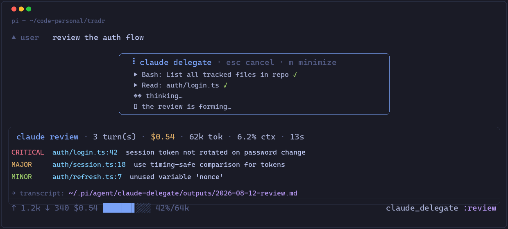

Delegate work to Claude Code from the pi coding agent — code reviews, detailed plans, implementation, security audits, docs, or your own templates.

pi install npm:@yorch/pi-claude-delegate
or from git: pi install git:github.com/yorch/pi-claude-delegate · requires the claude CLI
The pi agent calls the claude_delegate tool when a task suits Claude — or delegate manually with /claude.
Claude's output streams into the tool box as it's produced (stream-json), not after the fact.
Reviews/plans/audits are read-only (plan). Implementation uses acceptEdits. Full access only via explicit allowDangerous.
Modes are markdown files with frontmatter. Drop your own in ~/.pi/agent/claude-delegate/templates/ or a project .pi/ dir.
Claude's token usage and spend feed into pi's footer stats via the tool result.
Delegated Claude runs in your repo, so .claude/skills/ are available; pin one with skill: frontmatter.
| Mode | Permission | Model | Purpose |
|---|---|---|---|
review | plan (read-only) | sonnet | Code review, cites file:line, prioritized findings |
plan | plan (read-only) | sonnet | Detailed implementation plan with steps + risks |
implement | acceptEdits | sonnet | Implements a task, runs checks, reports changes |
security-audit | plan (read-only) | sonnet | Injection, auth, secrets, deserialization, supply chain |
docs | acceptEdits | sonnet | Generate/update docs matching repo style |
general | acceptEdits | config | Any task |
Custom modes are just markdown files with frontmatter — name, description, permissionMode, model, maxBudgetUsd, skill — plus your instructions as the body.
| Command | What it does |
|---|---|
/claude review: audit the new auth flow | Manual review of the whole repo |
/claude --mode=security-audit --scope=auth/ … | Audit a subdirectory |
/claude --mode=implement … | Implement with edits |
scope: "diff" (tool param) | Restrict to the current git diff |